Operating Documentation
Direction 5670006, Rev# 1
Discovery MR750w GEM Service Methods
Module Version 4.0, Version Date 10/18/11
Operating Documentation |
| Required Persons | Preliminary Reqs | Procedure | Finalization |
|---|---|---|---|
| 3 | Not Applicable | 4 hours |
Use this procedure to replace the RF Body Coil.
| Item | Qty | Effectivity | Part# | Manufacturer | |
|---|---|---|---|---|---|
| Field RF Coil Tuning Kit | 1 | - | 5311727 | - | |
| Authorized Personnel Floor Sign | 1 | - | 2289812 | - | |
| Non-Magnetic Service Tool Kit | 1 | - | 5112581 | - | |
| Step Gauge (Placed at front mounting bracket of Magnet) | 1 | - | 5397937 | - | |
| Safety Glasses | 1 | - | - | - | |
| Cut-Resistant Gloves | 1 | - | - | - | |
| Safety Shoes | 1 | - | - | - | |
| Small carpenter's level | 1 | - | - | - | |
| Item | Qty | Effectivity | Part# | Manufacturer |
|---|---|---|---|---|
| Adhesive | 1 | - | 46-220312P1 | - |
| Anti-seize | 1 | - | 2119594 | - |
| Item | Qty | Effectivity | Part# | Manufacturer | |
|---|---|---|---|---|---|
| Discovery MR750w 3.0T Body Coil and FRU Case (This FRU includes dielectric materials used during replacement) | 1 | - | 2208999-16 | - | |
| ||||
| Strong Magnetic Field! | ||||
| Ferrous materials can become dangerous projectiles in the presence of the magnetic field Produced by the Magnet. | ||||
| Do not Bring any ferromagnetic tools or equipment into the magnet room. |
| ||||
| Dangerous Work Area! | ||||
| Use of heavy equipment for coil removal and replacement presents hazards to all personnel in the area. | ||||
|
| ||||
| The body coil is heavy. | ||||
| Weight is approximately 95lbs (45kg) and requires three people in order to replace the coil. | ||||
Read the Hart ID information of the RF Body Coil. Look for the “BoardRevision” information (8 or 16).
Illustration 1: How to read Hart ID Information
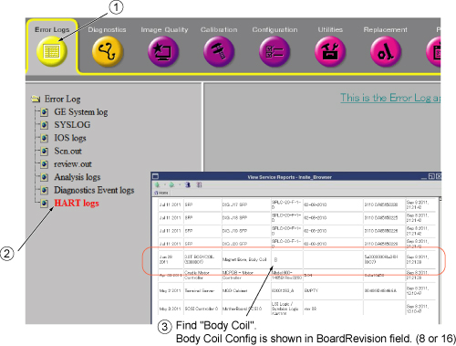
| Hart ID info (8 or 16) |
Follow Lockout/Tagout procedures per LOTO FOR XRFD Amp and PEN Cabinet document.
At outside of Magnet Room, open FRU Box and set FRU Body Coil as follows.
Illustration 2: FRU Body Coil Unpacking
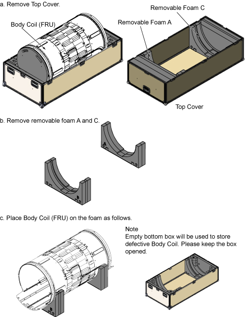
Check configuration of dielectric material for FRU Body Coil.
Illustration 3: Dielectric Material for FRU Body Coil
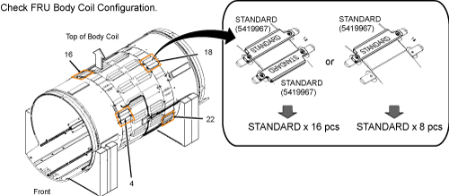
Table 1: Data Sheet of Dielectric Material Configuration (FRU Body Coil)
| Configuration of Dielectric Material (FRU Body Coil) |
Remove Bridge Cover.
Illustration 4: Bridge Cover.
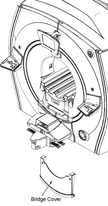
Remove Split Bridge. See Bridge Removal and Replacement document for details.
Remove the Front End Bell. See Front End Bell Removal and Install document for details.
Disconnect the two (2) air hoses at the rear end of the body coil.
Disconnect the two (2) drive cables (I&Q) at the rear end of the body coil. Disconnect the DC bias line at the rear, and disconnect the Hart ID cable of the body coil.
Remove the Rear End Bell. See Rear End Bell Removal and Install document for detail.
Remove yellow foam which seals between the acoustical barriers and body coil.
Illustration 5: Remove Yellow Foam
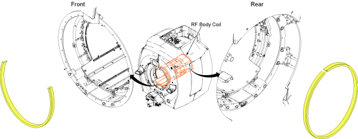
Remove bolts fixing the RF Body Coil as following steps.
For front side, remove four M6 bolts and washers from the bases of RF Coil Centering Assembly.
For rear side, remove four M6 bolts and washers from bottom of RF Body Coil.
Illustration 6: Remove Bolts and Nuts
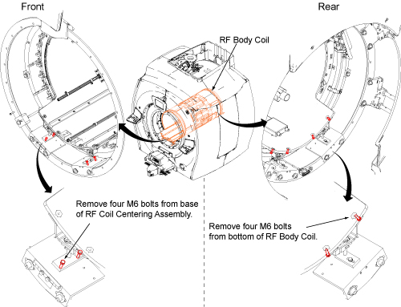
Disconnect the Bore Temperature Sensor (shown below) and tape to the magnet enclosure so it is out of the way.
Illustration 7: Disconnect the Bore Temperature Sensor
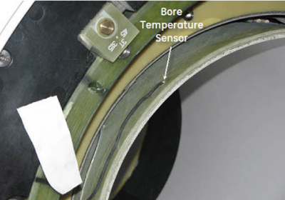
Slightly pull out the Body Coil as shown below.
Illustration 8: Remove Body Coil 1
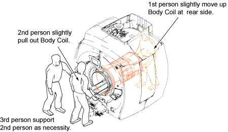
Remove RF Coil Centering Assemblies.
| NOTE: | RF Coil Centering Assemblies will be reused for new RF Body Coil. Do not discard. |
Illustration 9: Remove Body Coil 2
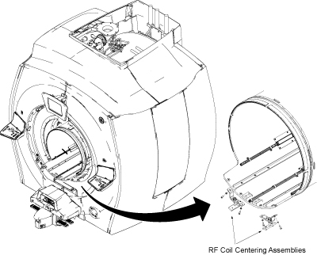
Fully remove the coil (as shown below) and place it inside the empty bottom half of the FRU case.
Illustration 10: Remove Body Coil 3
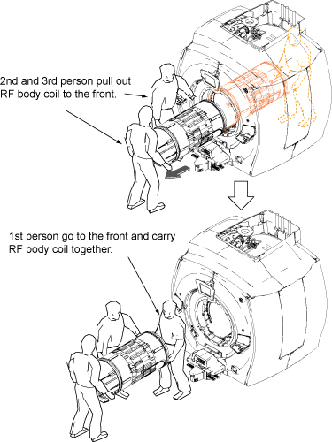
Check configuration of dielectric material for defective Body Coil.
Illustration 11: Dielectric Material for defective Body Coil

Table 2: Data Sheet of Dielectric Material Configuration (Defective Body Coil)
| Configuration of Dielectric Material (Defective Body Coil) |
Open the following Data Analysis Tool (pdf) and follow instruction in the tool to setup dielectric material for FRU Body Coil.
| NOTE: |
|
Media File 1: Data Anayisis Tool

| NOTE: | Dielectric materials are stored in FRU Box. In case additional dielectric material is needed, FRU number of Dielectric Tuning FRU Kit is 5423650. |
Transfer the front RF Coil Centering Assemblies (Front) which were used for defective RF Body Coil to the new RF Body Coil.
Illustration 12: Transfer the front RF Coil Centering Assemblies
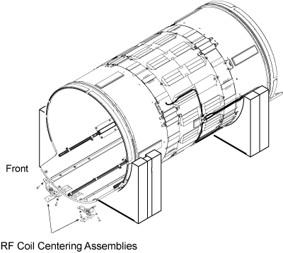
| ||||
| Prior to each Body Coil Install, inspect airflow gaskets( 5404530
and 5404530-2). Gaskets should be bonded along entire length. Illustration 13: Airflow Gaskets
| ||||
Slide in the new RF body coil (shown below).
Illustration 14: Slide in RF Body Coil
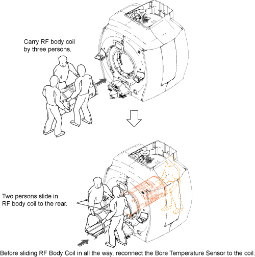
Fix the RF Body Coil by bolts and washers by reverse order.
Illustration 15: Restore RF Body Coil
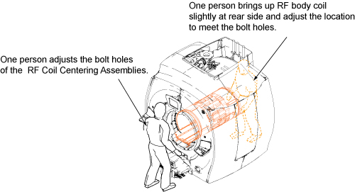
| ||||
| Do not skip RF Body Coil Isolation procedure. It will have big influence to Body Coil Tuning. | ||||
Perform RF Body Coil Isolation.
Reconnect the Bore Temperature Sensor to the coil .
Illustration 16: Bore Temperature Sensor
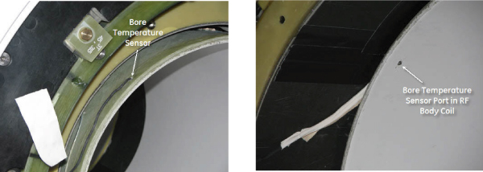
Install yellow foam as previously installed. (front: 2/3 of the diameter with the top 1/3 open, rear: full diameter around body coil)
Illustration 17: Yellow Foam
Replace the front end bell. Refer to Front End Bell Removal and Install. There should be a 2.0 to 2.5 mm gap between the front end bell and the RF body coil.
Replace the rear end bell. Refer to Rear End Bell Removal and Install. There should be a 2.0 to 2.5 mm gap between the rear end bell and the RF body coil.
Reconnect the two air hoses at the rear end of the body coil.
Reconnect two cables.
Replace the split bridge. Refer to Bridge Removal and Replacement.
Remove LOTO and perform TPS Reset.
Perform RF Body Coil Tuning.
Restore Defective Body Coil in FRU Box as it was.
| NOTE: | Please return the Dielectric Materials that are not used in the replacement. |
| NOTE: | Required Calibrations and Functional Checks after Body Coil Replacement are done in RF Body Coil Tuning procedure in Step 31. |
No finalization steps.